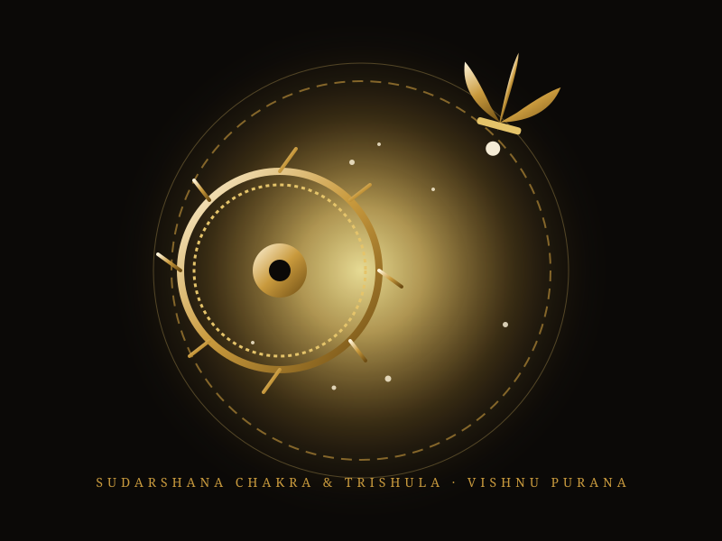
Sudarshana & Trishula
विष्णु पुराण ३.२ · Lathe of the Sun
Forged when Vishwakarma placed Surya upon his celestial lathe, paring down solar brilliance into weapons of cosmic balance.
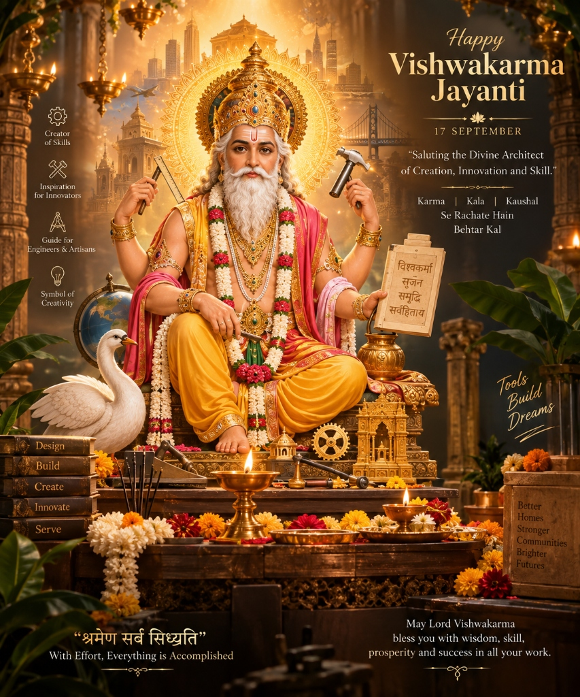
THE DIVINE ARCHITECT
Saluting the Supreme Architect of Creation, Innovation and Human Skill.
सृष्टि को आकार देने वाला दिव्य शिल्पकार।
Across Hindu traditions, Vishwakarma is associated with divine craftsmanship, creation, and the shaping of extraordinary works. From the unmanifest cosmic void to the consecrated chisel of mortal artisans, creation itself is revered as an act of sacred devotion.
सृष्टि का आरंभ
Source Type A — Vedic"Before temples, cities, tools and machines, there was creation itself."
य इ॒मा विश्वा॒ भुव॑नानि॒ जुह्व॒दृषि॒र्होता॒ न्यसी॑दत्पि॒ता नः॑ ।
स आ॒शिषा॒ द्रवि॑णमि॒च्छमा॑नः प्रथम॒च्छदव॑रा॒ँ आ वि॑वेश ॥
— ऋग्वेद १०.८१.१ (Rigveda 10.81.1)
The earliest Vedic layer in Rigveda 10.81–10.82 presents Viśvakarman not merely as an artisan with material tools, but as the supreme cosmic mind, the archetypal seer (*Hotar*) who establishes the dimensions of reality. He offered all created realms in sacrifice to bring forth existence.
सृष्टि के निर्माण से पूर्व, जब न द्युलोक था न पृथ्वी, केवल असीम शून्य था — तब सर्वद्रष्टा परम ऋषि विश्वकर्मा ने अपनी संकल्प शक्ति से समस्त जगत को रचा।
सर्वद्रष्टा विश्वकर्मा
Source Type A — Vedic"हर दिशा में दृष्टि, हर दिशा में सृजन।"
विश्वतश्चक्षुरुत विश्वतोमुखो विश्वतोबाहुरुत विश्वतस्पात् ।
सं बाहुभ्यां धमति सं पतत्रैर्द्यावाभूमी जनयन्देव एकः ॥
— ऋग्वेद १०.८१.३ (Rigveda 10.81.3)
In this celebrated Vedic verse, the cosmic architect is depicted with eyes, faces, arms, and feet extending across every direction of existence. Like a master smith operating the cosmic bellows, He welds heaven and earth together with His wings and arms, forging order from the formless void.
वे एकमात्र देव अपनी भुजाओं और पंखों से ब्रह्मांडीय धौंकनी चलाते हुए आकाश और पृथ्वी का सृजन करते हैं। उनका ध्यान संपूर्ण चराचर जगत में व्याप्त है।
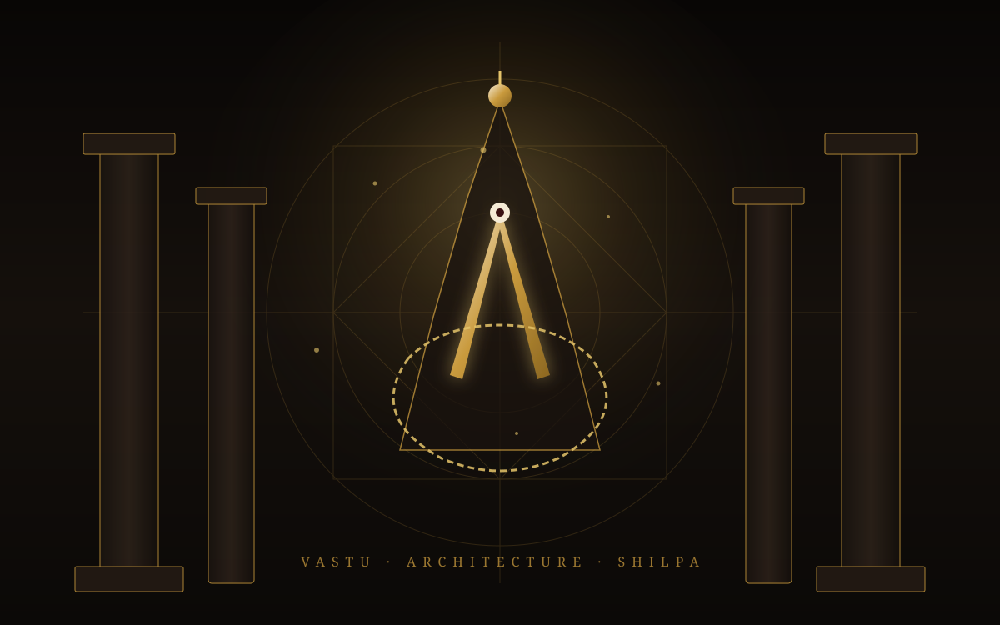
दिव्य शिल्पकार एवं वास्तु अधिष्ठाता
Source Type C — Puranic & Itihasa"Master of thirty-two crafts, sixty-four arts, and celestial architecture."
विश्वकर्मा नमस्तेऽस्तु विश्वात्मा विश्वसंभवः ।
सर्वलोकमहाकर्ता त्वं हि सर्वप्रवर्तकः ॥
— पारंपरिक देव स्तुति (Traditional Stuti)
As the Vedic conception flowed into the Epics and Puranas, Vishwakarma manifested as the master architect of the Devas. The tradition established that divine craft is not arbitrary decoration; it is mathematical truth, proportion, structural integrity, and sacred geometry codifying the Vastu Shastras.
देवताओं के प्रधान वास्तुकार जिन्होंने अमरावती के प्रासाद, दिव्य विमान और मानव कारीगरों के लिए शिल्प विद्या का विधान रचा।
दिव्य स्थापत्य, अस्त्र एवं पवित्र निर्माण
Source Type C — Puranic & ItihasaExplore the legendary creations traditionally attributed to Vishwakarma. Click on any creation to read its authentic narrative and textual source.

विष्णु पुराण ३.२ · Lathe of the Sun
Forged when Vishwakarma placed Surya upon his celestial lathe, paring down solar brilliance into weapons of cosmic balance.
महाभारत एवं रामायण · Celestial Citadels
Island citadels raised from the sea, planned with optical floors, geometric boulevards, and impregnable crystal gateways.
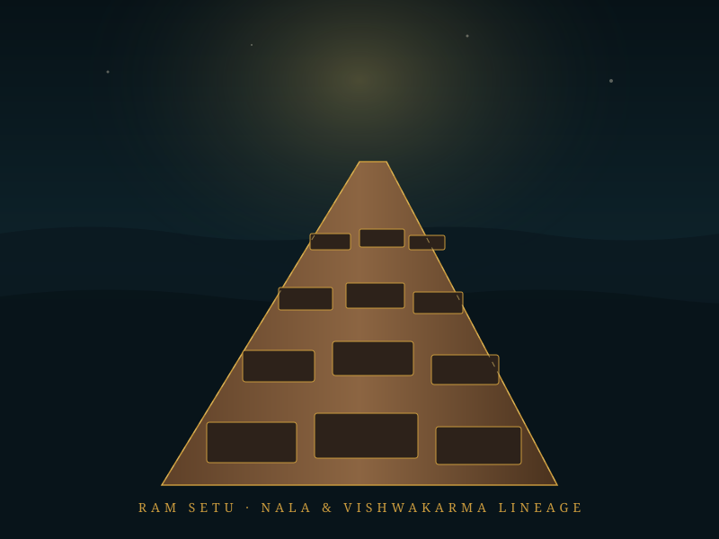
वाल्मीकि रामायण ६.२२ · Nala's Architecture
Engineered across the southern sea by Nala, direct inheritor of Vishwakarma's divine architectural intellect.
स्कन्द पुराण · The Mysterious Artisan
Carved from the sacred floating Daru timber by Vishwakarma disguised as an elderly carpenter behind locked sanctuary doors.
श्री विश्वकर्मदेव की कथा : पूजन-विधि सहित (१९००)
Source Type B — Traditional KathaDocumented historical literature from the turn of the 20th century connecting skilled labor, honesty, and divine blessing across six liturgical sections.
अध्याय १ · भूमिका (The Sacred Context)
प्राचीन काल से ही भारत में ज्ञान और कर्म को एक दूसरे का पूरक माना गया है। श्री विश्वकर्मदेव की कथा का मुख्य ध्येय मनुष्य को यह स्मरण कराना है कि जो कर्म ईमानदारी, कुशलता और पवित्रता से किया जाता है, वही सच्चा धर्म है।
In the 1900 traditional text, the narrative begins by establishing that human industry, honesty, and artistic craft are direct spiritual duties, through which an artisan honors the divine creator.
अध्याय २ · सृष्टि और शिल्प (Cosmic Craftsmanship)
कथा में वर्णन आता है कि जब संसार में अंधकार और अव्यवस्था थी, तब भगवान विश्वकर्मा ने अपने दिव्य ज्ञान से दिशाओं, ग्रहों, पर्वतों और धातुओं का विभाजन कर सृष्टि को एक व्यवस्थित रूप प्रदान किया।
The text narrates how Vishwakarma brought order out of primordial chaos, establishing the properties of metals, stone, and wood for the benefit of all living beings.
अध्याय ३ · दिव्य निर्माण (Architecture for the Gods)
देवताओं के निवेदन पर प्रभु विश्वकर्मा ने स्वर्ग में अमरावती, कुबेर के लिए अलकापुरी और भगवान शिव के लिए दिव्य धामों का निर्माण किया। उन्होंने प्रत्येक निर्माण में प्राकृतिक संतुलन और सौंदर्य का अद्भुत सामंजस्य रखा।
Responding to the prayers of the Devas, Vishwakarma designed celestial assemblies, golden thrones, and aerial vehicles, maintaining perfect environmental harmony.
अध्याय ४ · कर्म और कौशल (The Sanctity of Labor)
कथा का सबसे प्रेरणादायक भाग मानव कारीगरों से संबंधित है। जो शिल्पकार अपने औजारों का सम्मान करता है, छल-कपट से दूर रहकर अपने कार्य में श्रेष्ठता लाता है, भगवान विश्वकर्मा उसके घर में सुख और समृद्धि का वास करते हैं।
The core moral of the traditional katha centers on human artisans: those who respect their tools, avoid deceit, and strive for excellence are blessed with enduring prosperity and peace.
अध्याय ५ · विश्वकर्मा की आराधना (The Workshop Ritual)
पूजन विधान के अंतर्गत बताया गया है कि विश्वकर्मा पूजा के दिन यंत्रों को तेल-जल से स्वच्छ कर उन पर कुमकुम और पुष्प अर्पित करने चाहिए। उस दिन औजारों को विश्राम देकर सामूहिक रूप से प्रभु की आरती करनी चाहिए।
The liturgical section prescribes the cleansing of tools, application of vermilion and marigolds, and congregational singing of the Aarti, giving tools a sacred day of rest.
अध्याय ६ · आशीर्वाद (The Benediction)
कथा के अंत में यह प्रार्थना की जाती है कि हे विश्वकर्मा प्रभु, हमारे हाथों में कुशलता, बुद्धि में शुचिता और कर्म में निष्ठा प्रदान करें। सकल सृष्टि के कल्याण के लिए हमारे कौशल का सदुपयोग हो।
The katha closes with a solemn prayer asking for dexterity of hand, purity of intellect, and unwavering dedication to the welfare of all beings.
कर्म और सृजन का पावन दर्शन
Original Devotional Interpretation"कौशल जब समर्पण से जुड़ता है, तो कर्म साधना बन जाता है।"
सृजन
The sacred capacity to conceive ideas in the mind and translate them into physical reality.
शिल्प
Skill developed through continuous practice, patience, and intimacy with raw materials.
ज्ञान
Deep understanding of proportion, natural law, environmental harmony, and structural truth before action.
संयम व शुचिता
Mathematical precision, ethical integrity, and uncompromising standard of excellence.
कर्म साधना
The inherent dignity of human labor. Transforming daily work into a consecrated spiritual discipline.
परंपरा आज भी जीवित है।
Across workshops, industrial floors, laboratories, and artisan studios, the living lineage continues through the annual celebration of Vishwakarma Puja. On this sacred day, work pauses, instruments are rested, and human skill bows in gratitude to the divine source of creation.
THE TOOLS ARE READY. THE PUJA BEGINS.
सृजन की परंपरा से पूजन के पवित्र अनुष्ठान की ओर
सृजन की परंपरा आज भी जीवित है।
The story of Vishwakarma does not remain confined to the ancient world. The tradition continues wherever people use knowledge, skill and tools to create.
ORIGINAL EXPLANATORY TEXT · सांस्कृतिक व दार्शनिक चिंतनजब कर्म पूजा बन जाता है
In Indian civilizational thought, work is not mere economic transactions or manual toil. When approached with ethical intent, discipline, and mastery, work is elevated to consecrated worship. Vishwakarma Puja is the annual festival where artisans, industrial workers, engineers, and creators consecrate their workplaces, offer gratitude to their instruments, and acknowledge the divine origin of human skill.
THE CONSECRATION PATHWAY · साधन से सिद्धि तक
"Devotion can be expressed through the care, discipline and skill with which we perform our work."
हमारे कर्म के साधन
A chisel carving stone, a lathe shaping precision steel, a compass tracing sacred geometry, or a digital stylus drafting architecture — tools are physical extensions of human consciousness. Select any instrument to view its architectural blueprint schematic.
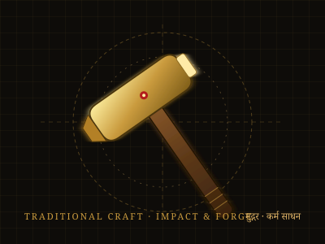
मुद्गर / हथौड़ा
A universal symbol of physical craftsmanship, shaping raw metal and timber into functional form through measured impact, rhythmic endurance, and patience.
Cultural Role: Revered by blacksmiths, carpenters, and stone-carvers. During Vishwakarma Puja, the hammer is washed, adorned with sandalwood and vermilion tilak, and granted complete rest.
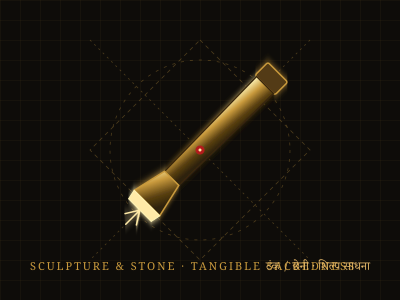
टंक / छेनी
The definitive instrument of form, transforming inert granite, sandstone, and marble into consecrated deities and intricate architectural relief.
Shilpa Shastra: Held with steady contemplation (Dhyana) so the form hidden in the stone can reveal itself without fracturing the matrix.
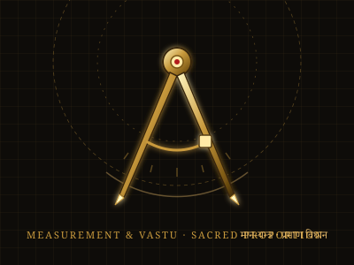
मान-यन्त्र / परकार
The instrument of sacred proportion, establishing the Golden Ratio and architectural orientation prescribed in the ancient Vastu Shastras.
Universal Order: Represents Rita (cosmic truth and balance), ensuring architectural harmony between mortal structures and astronomical axes.
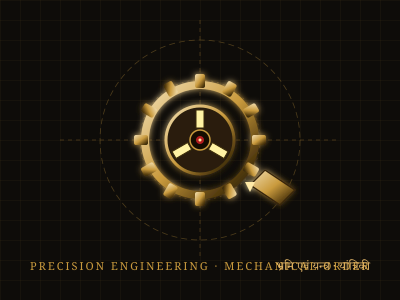
भ्रमि / खराद यन्त्र
Echoing the legendary celestial lathe on which Vishwakarma trimmed the blinding rays of the Sun, the modern lathe anchors all rotational mechanical fabrication.
Scriptural Parallel: In the Vishnu Purana (3.2), Vishwakarma trimmed Surya's rays on the Bhrami (lathe); today, industrial lathes craft jet engines and power turbines.
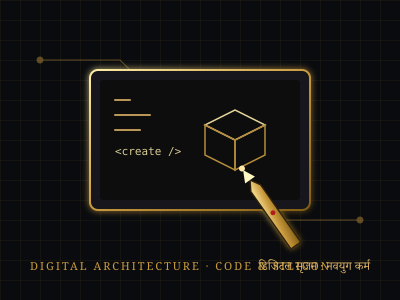
डिजिटल सृजन / आधुनिक साधन
The contemporary instrument of modern architecture and engineering, where code, silicon algorithms, and vector meshes translate imagination into reality.
Modern Consecration: Today, software developers, robotics engineers, and digital architects place keyboards and computers upon the altar during Vishwakarma Puja.
पूजन की यात्रा
The following progression outlines the customary seven-step observance traditionally practiced in workshops, factories, laboratories, and artisan studios across India.
शुद्धि
Thoroughly clean the workplace, polish instruments, and sanctify the environment.
तैयारी
Arrange the altar platform, draped cloth, Mangal Kalash, and sacred materials.
आवाहन
Begin the devotional observance with contemplation and invoke Bhagwan Vishwakarma.
पूजन
Offer customary flowers, chandan, dhoop, deepa, and sweets according to family tradition.
औज़ार पूजन
Place tools, machines, instruments or computers respectfully as consecrated implements.
आरती
Sing the congregational aarti with clapping, bells, and five-wick camphor flame.
आशीर्वाद
Seek divine blessings for mastery, safety, shared prosperity, and meaningful labor.
Vishwakarma Puja is observed in different ways across communities and regions. The practices presented here describe general/customary elements rather than a single universal ritual. In Eastern/Northern India it follows the solar Kanya Sankranti (September 16–18); in Western traditions it aligns with post-Diwali Govardhan Puja, and in the South with Ayudha Puja.
जहाँ सृजन होता है
From the fragrance of seasoned wood and the heat of iron forges to the silent precision of semiconductor cleanrooms and digital design studios — every workplace is a sacred crucible of human creation.
काष्ठ शिल्प
Patience with grain, mortise-tenon joinery, and natural timber warmth.
धातु कर्म
Taming ore through fire, anvil, and tempering into durable tools and armor.
प्रस्तर शिल्प
Awakening divine form and timeless endurance from untouched rock.
यांत्रिकी
Gears, tolerances, rotational momentum, and industrial power.
अभिकल्पना
Architectural drafting, ergonomic harmony, and structural beauty.
अभियांत्रिकी
Bridges, tunnels, energy systems, and conquest over natural barriers.
डिजिटल सृजन
Code, silicon architecture, and the invisible digital infrastructure of modern humanity.
"Salutations to Bhagwan Viśvakarman, the cosmic divine creator, universal architect, and eternal patron of all arts, crafts, and human skill."
Classical Dhyana Mantra Tradition · प्रामाणिक ध्यान परंपरा
Devotional experience is self-paced. Audio is strictly opt-in and synthesizes sacred harmonic tanpura & temple bell frequencies.
सृजन की भावना
The human act of creating through knowledge, discipline, and skill connects traditional artisans directly to contemporary engineers and designers. Explore the enduring spirit across eras:
बढ़ई / काष्ठ शिल्पी
"Wood becomes form through measurement, patience and skill." Mortise-and-tenon joinery that withstands generations.
हुनर हाथों से आकार लेता है।
लुहार / धातु शिल्पी
Mastering the intense heat of the forge, beating raw metal with measured rhythm into unbreakable plowshares, blades, and anchors.
अग्नि और लौह का पावन समन्वय।
मूर्तिकार / पाषाण शिल्पी
Seeing the divine deity breathing within untouched granite and chiseling away all excess matter with surgical reverence.
पाषाण में प्राण प्रतिष्ठा।
संरचना अभियंता
Translating stress tensors, wind aerodynamics, and seismic loads into monumental suspension bridges and towering resilient citadels.
गणित और विज्ञान का साक्षात रूप।
औद्योगिक अभिकल्पक
Harmonizing human anatomy, material sustainability, and mechanical efficiency into elegant products that enrich everyday life.
सौंदर्य और उपयोगिता का संगम।
डिजिटल रचनाकार
Architecting microchip logic, neural models, and resilient software infrastructure that connects global human civilization.
अदृश्य कोड से मूर्त समाधान।
*Note: Modern professions are not claimed to be religiously identical to ancient guilds; rather, they reflect the continuing human act of creation through knowledge and skill.
आपका कर्म महत्वपूर्ण है
"Every creation begins with an idea, but it becomes real through effort, knowledge and skill."
The hands that build, repair, design and create carry a timeless tradition of craftsmanship forward.
ORIGINAL WEBSITE COPY · मूल दार्शनिक विचार
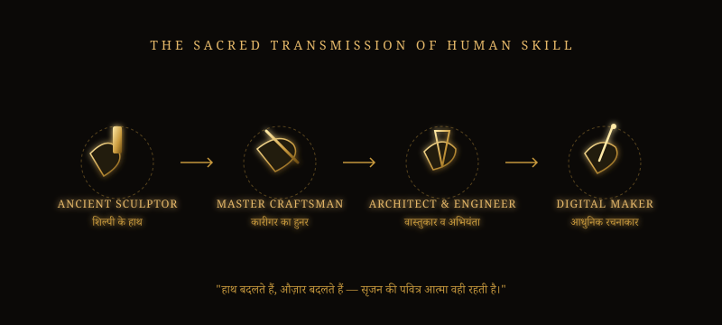
एक जीवित परंपरा
In millions of workshops, industrial facilities, transport depots, research laboratories, and studios, Vishwakarma Puja remains a living celebration of community solidarity and gratitude.
On this sacred day, machines and tools rest, reminding humanity that instruments serve life, not the reverse.
आप क्या सृजन करेंगे?
Creation is not only about what we build. It is also about the care, skill and intention with which we build it.
NOW, RECEIVE THE BLESSING.
अब आशीर्वाद की ओर।
ENTER DARSHANविश्वकर्मा दिव्य दर्शन
A contemplative collection of sacred visions celebrating Bhagwan Vishwakarma, divine architecture, traditional craftsmanship, consecrated tools, and the enduring spirit of creation. Select any vision to enter the contemplative fullscreen lightbox viewer.
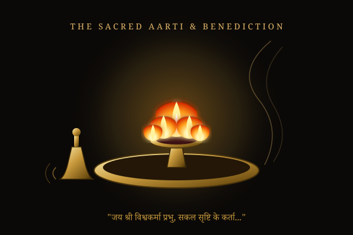
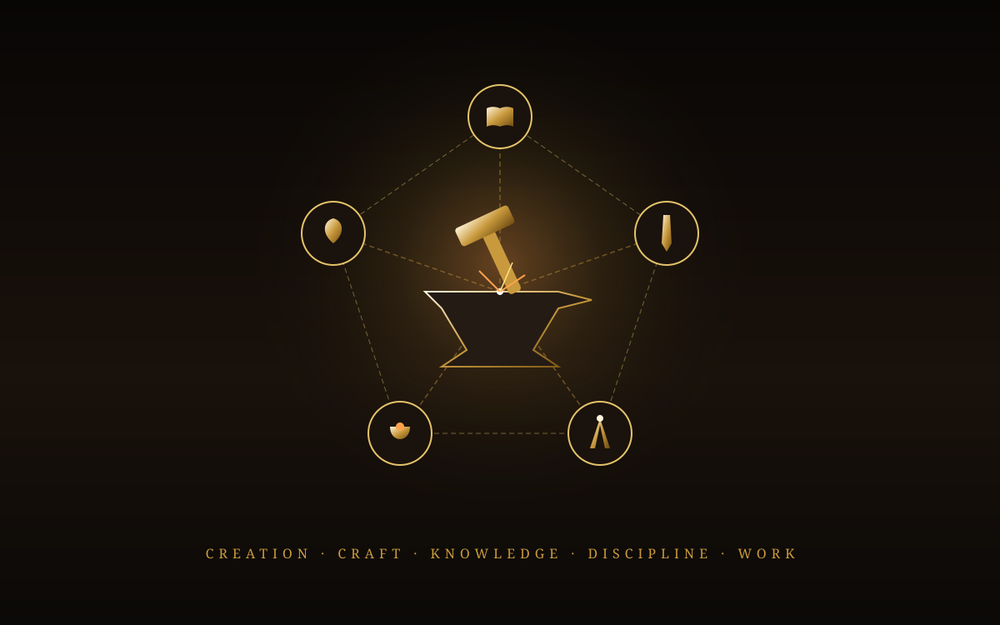
Obeisance to Vishwakarma — The Divine Architect of All
शास्त्र, इतिहास एवं लोक परंपराएँ
In accordance with the foundational research principles of this project, narrative traditions are strictly stratified across four canonical domains. Scriptural citations are verified against authentic manuscripts and public academic repositories.
इस दिव्य यात्रा के विषय में
This website was conceived as a respectful, immersive journey into the sacred legacy of Bhagwan Vishwakarma. Built entirely with pure web technologies — without computational frameworks, external databases, or commercial trackers — it harmonizes ancient scriptural authenticity with cinematic modern visual design.
Original creative reflections and modern maker connections are explicitly distinguished from Vedic and Puranic scriptures to uphold the highest standards of cultural and theological integrity.
May this digital sanctum honor the hands, minds, and spirits of craftspeople, artisans, builders, and creators across every generation.